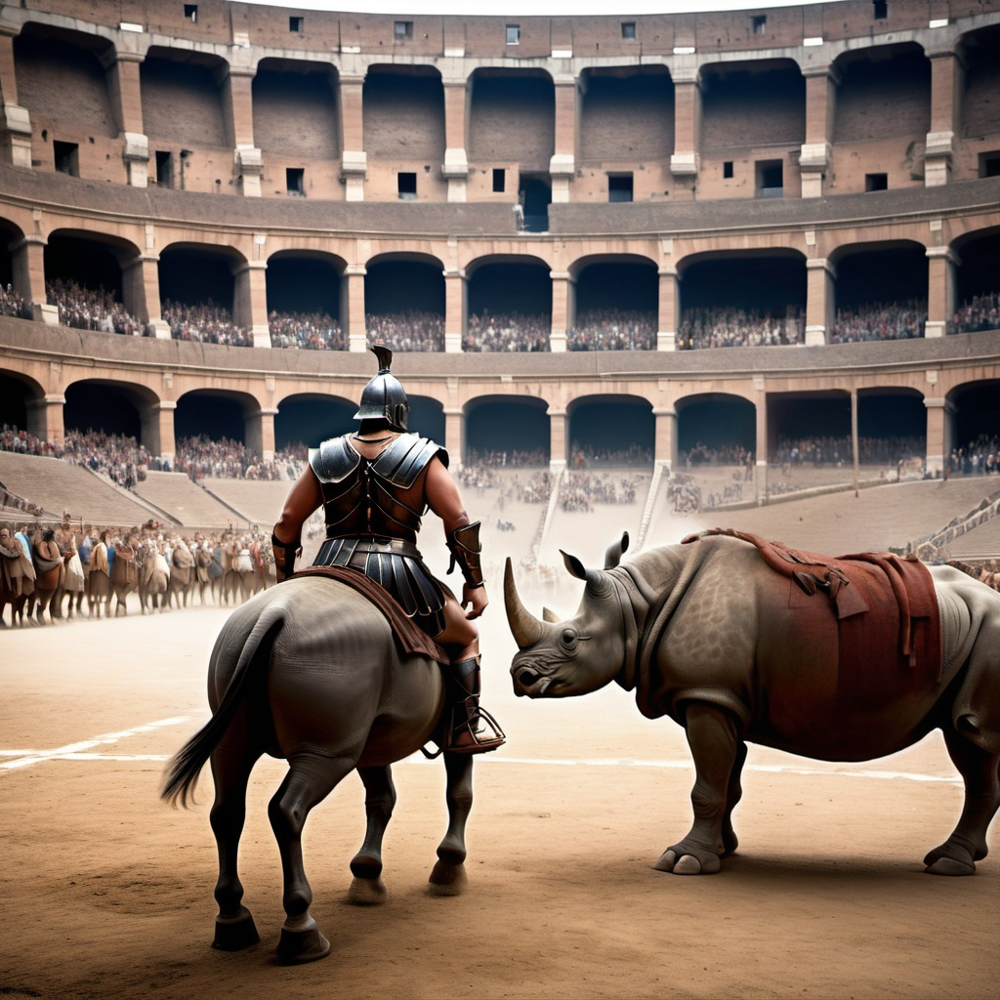

The Great Beast Hunt
Date:
15th April, 85 AD
A spectacular event featuring exotic animals from across the Roman Empire.
The Colosseum is transformed into a vast arena filled with wild beasts such as lions,
tigers, elephants, and rhinos. Roman hunters, along with trained gladiators,
participate in a dangerous contest to capture or kill the animals.
The event is a grand display of Roman power,
with the emperor watching from his lavish box.